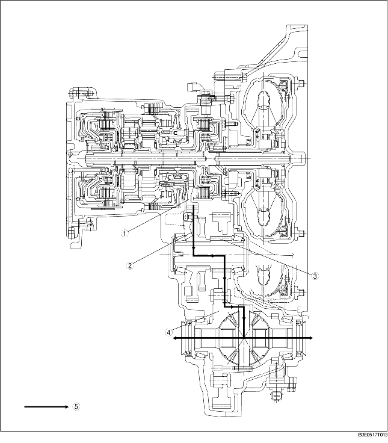

• Le mécanisme de transmission finale en deux étapes a été adopté en adaptant le pignon secondaire et le pignon de sortie sur l'arbre du pignon de sortie, afin réduire au maximum la taille de la boîte-pont.

.